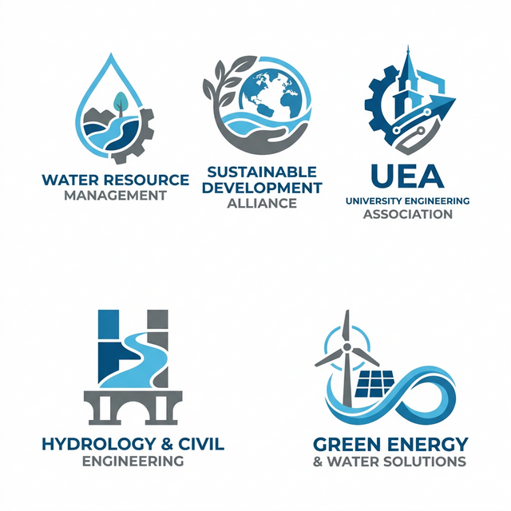

- Serving as Chair of the Memberships Committee; directing a strategy to build, maintain and leverage the association’s global membership while cultivating new institutional partnerships; launched activities including a webinar series, intergenerational dialogues, social media campaigns, and Global Networking Cafes.
- Serving as Co-chair of the Early Career and Young Professionals task force; elevating the role of youth across the association and promoting their contribution to SDG 6, through organizing youth-led webinars, panels, and online video series.
- Chair of the Scientific Program Committee to the XIX World Water Congress 2025.
- Co-led a working group national food and nutrition security experts aimed at applying a systems approach to create evidence-based policy recommendations to address the root causes of hunger and achieve SDG 2 in the United States
- Organized a dialogue series, including an Independent Dialogue for the 2021 UN Food Systems Summit, resulting in recommendations for improving the resilience, sustainability, equitability, and nutritional value of food systems
- Co-authored a report which included policy recommendations for the White House Conference on Hunger, Nutrition, and Health, which advocated the need for driving system-level transitions
- Leading a global team of young water professionals and delivers a Virtual Global Water Networking Café and a webinar series showcasing interdisciplinary and intergenerational research on water
- Providing strategic and technical support for the initiative
- Co-established the Texas A&M chapter, led speaker series, networking activities
- Launched the ongoing weekly “Brownbag Tuesday” event to provide cross-disciplinary graduate students the opportunity to network and connect